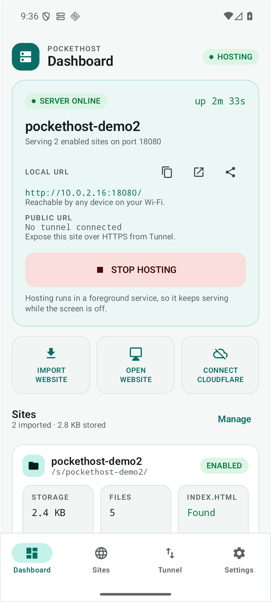

Gömülü Go motoru
net/http tabanlı sunucu, gomobile ile doğrudan uygulama sürecinde çalışır. Ayrı süreç, shell veya harici binary yok; JNI köprüsü üzerinden yönetilir.
Android 8+ · ARM64 · bağımsız proje
AI ile ürettiğin siteyi ZIP olarak telefona at, tek dokunuşla yayınla. Linux yok, Termux yok, root yok. Wi-Fi'deki herkes saniyeler içinde açsın; istersen Cloudflare Tunnel ile HTTPS üzerinden dünyaya aç.

Neden PocketHost?
Bu bir demo veya UI prototipi değil: süreç içinde çalışan gerçek bir Go HTTP sunucusu, gerçek ZIP güvenlik kontrolleri ve gerçek ölçümler.
net/http tabanlı sunucu, gomobile ile doğrudan uygulama sürecinde çalışır. Ayrı süreç, shell veya harici binary yok; JNI köprüsü üzerinden yönetilir.
Siteyi ZIP olarak seç; kök dizini otomatik bulur, güvenli biçimde çıkarır ve önizleme sunar. ZIP-Slip, symlink, zip bombası ve bozuk arşivler reddedilir.
Sunucu 0.0.0.0:port üzerinde dinler; panel gerçek LAN adresini gösterir. Wi-Fi'deki herhangi bir cihaz siteyi açar — internet bile gerekmez.
Hızlı tünel ile geçici bir *.trycloudflare.com HTTPS adresi; Named Tunnel için token yalnızca Android Keystore'da şifreli saklanır.
İstek sayısı, aktif bağlantı, yanıt dağılımı, gecikme (p50/p95), RAM/ısı/trafik… Cihazın vermediği değer "kullanılamıyor" yazar — asla uydurulmaz.
Sadece uygulamaya özel depolama; geniş depolama izni yok. Yönetim yüzeyi HTTP'ye açılmaz. Dosya erişimi her site köküne os.Root ile hapsedilir.
Üç adım
ARM64 Android 8.0+ bir telefon yeter. Uygulamayı GitHub üzerinden edin, bildirim iznini onayla.
AI aracından indirdiğin ZIP'i İçe Aktar ile seç. PocketHost kök dizini bulur, dosyaları doğrular ve özet çıkarır.
BAŞLAT'a bas. Yerel URL hazır. İstersen Cloudflare Tunnel'ı bağlayıp HTTPS'le dünyaya aç.
Uygulama içinden
Gerçek ekran görüntüleri — koyu ve açık tema desteklenir.
Teknik künye
Sık sorulanlar
Hayır. PocketHost sıradan, rootlanmamış bir Android telefon için tasarlandı. Linux, Termux, SSH veya sunucu bilgisi gerekmez.
Bu sürümde yerel barındırma tamamen ücretsiz ve reklamsız. Gelecekte isteğe bağlı "yönetilen tünel / özel alan adı" gibi eklentiler ücretli olabilir; çekirdek işlev ücretsiz kalacak şekilde tasarlanıyor.
Varsayılan olarak yalnızca aynı Wi-Fi ağındaki cihazlar erişir. Dünyaya açmak için Cloudflare Tunnel'ı açıkça bağlarsın — uygulama herkese açmadan önce onay ister.
Statik siteler: HTML, CSS, JavaScript, resimler, fontlar. PHP, MySQL, Node.js veya Docker desteklenmez — PocketHost'un amacı statik site barındırmaktır.
Hızlı tünel (geçici *.trycloudflare.com) Cloudflare hesabı gerektirmez. Kalıcı (Named) tünel için Cloudflare hesabı ve tünel tokenı gerekir; token cihazda şifreli saklanır.
Hayır, PocketHost Android'e özgüdür (Android 8.0+ / ARM64). iOS'ta arka planda sürekli sunucu çalıştırmak platform kuralları gereği mümkün değildir.
Sunucu çalışırken kısmi wake lock ve Wi-Fi kilidi alınır; sunucu durunca arka plan yoklaması da durur. Ölçülen boşta bellek ~100 MB seviyesindedir.